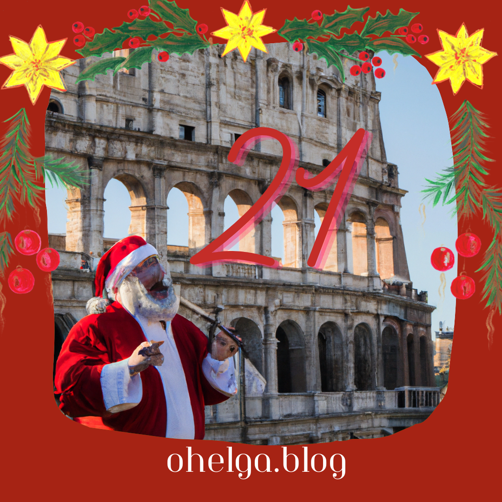

O, helga podcast. · 2023
Lucka 21, version av sången av the popstar among tenors!
Avaa äänitiedostoVi följer upp med en italiensk version av sången av the popstar among tenors! Onko italialainen versio yhtä nykivä kuin espanjalainen? Ja kysymys, jonka kaikki esittävät: miten tonen onnistuu italiaksi? I dagens lucka: Silvio d’Anza: O Santa Notte.
Vi följer upp med en italiensk version av sången av the popstar among tenors! Onko italialainen versio yhtä nykivä kuin espanjalainen? Ja kysymys, jonka kaikki esittävät: miten tonen onnistuu italiaksi? I dagens lucka: Silvio d’Anza: O Santa Notte.